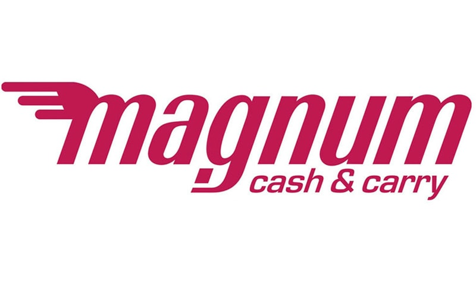
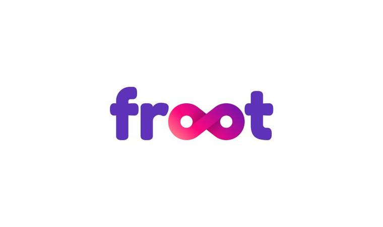

<link rel="stylesheet" href="https://stackpath.bootstrapcdn.com/bootstrap/4.3.1/css/bootstrap.min.css" >
<ngb-carousel *ngIf="imageUrlArray">
  <ng-template ngbSlide>
    <div class="picsum-img-wrapper">
      
    </div>
    <div class="carousel-caption">
      <h3 class = "slide1-title" >Самая быстрая доставка продуктов на дом!</h3>
      <p class="slide1-txt">Не нужно тратить свое время и время своих близких на закупки, лучше проведите
        его вместе с ними, а мы позаботимся, чтобы все необходимое было всегда рядом</p>
    </div>
  </ng-template>
  <ng-template ngbSlide>
    <div class="picsum-img-wrapper">
      
    </div>
    <div class="carousel-caption2">
      <h3 class="slide2-title">Самые свежие продукты каждый день! </h3>
      <button class="orderBtn" (click)="scroll(target)">Заказать сейчас! </button>
    </div>
  </ng-template>
  <ng-template ngbSlide>
    <div class="picsum-img-wrapper">
      
    </div>
    <div class="carousel-caption">
      <h3 class="slide3-title">Теперь, вы можете заказать ваши любимые овощи и фрукты в любое время по номеру <a class="num" href="tel:1402">1402</a></h3>
    </div>
  </ng-template>
</ngb-carousel>

<section class="main-partners">
  <p class="partner-title">Наши партнеры</p>
  <div class="partner-list">
    <div class="partner">
      
      <p class="partner-txt">Магнум</p>
    </div>
    <div class="partner">
      
      <p class="partner-txt">Small</p>
    </div>
    <div class="partner">
      
      <p class="partner-txt">Froot</p>
    </div>
  </div>
</section>
<section class="aboutUs">
  
  <div class="aboutUsTxt">
    <p class="title1">Несколько слов о нашем магазине</p>
    <p class="title2">Почему именно мы?</p>
    <p class="title3">Представьте вы пришли домой после работы уставшими и захотели просто покушать, а дома ничего нету поесть и на улицу опять выходить
      будет лень.
      Ну или вы хотите приготовить вкусный и полезный ужин, и вам не хватает нужного ингредиента
      для Вашего кулинарного шедевра, который так хочется приготовить? Что же делать в такие моменты?
      Теперь купить продукты питания можно просто и комфортно, даже не выходя на улицу.
      Что уж говорить о колоссальной экономии времени, да и денег. Теперь Вы точно не купите лишнюю газировку или
      шоколадку, когда устанете бродить по магазину, и Ваш бюджет не пострадает от ненужных трат. Плюс ко всему
      такие ненавистные очереди останутся навсегда в прошлом. Наш интернет-магазин Ez Shop предлагает широкий ассортимент
      товаров.</p>
  </div>
</section>
<section class="aboutUs">
  
  <div class="aboutUsTxt">
    <p class="title1">Magnum</p>
    <p class="title3g">«Magnum Cash&Carry» — крупнейшая
      торгово-розничная сеть Казахстана, входит в десятку крупнейших
      частных компаний страны. Основной деятельностью является
      реализация товаров широкого потребления. Сети принадлежит 60 торговых комплексов разного формата (гипермаркеты, супермаркеты и магазины «Magnum-express» малого формата) в девяти городах Казахстана: Алма-Ата, Нур-Султане, Каскелене, Караганде, Талдыкоргане, Шымкенте, Петропавловске, Кызылорде и Таразе. Общее количество покупателей торгово-розничной сети «Magnum Cash & Carry» превышает 300 000 человек в день. Штат сотрудников насчитывает более 9 000 человек.</p>
  </div>
</section>
<section class="aboutUs">
  
  <div class="aboutUsTxt">
    <p class="title1">Small</p>
    <p class="title3g">«Small» — крупнейшая торгово-розничная сеть Казахстана,
      входит в десятку крупнейших частных компаний страны. Основной
      деятельностью является реализация товаров широкого потребления.
      Сети принадлежит 60 торговых комплексов разного формата (гипермаркеты,
      супермаркеты и магазины «Small» малого формата) в девяти городах Казахстана:
      Алма-Ата, Нур-Султане, Каскелене, Караганде, Талдыкоргане, Шымкенте, Петропавловске,
      Кызылорде и Таразе. Общее количество покупателей торгово-розничной сети «Small» превышает 300 000 человек в день. Штат сотрудников насчитывает более 9 000 человек.</p>
  </div>
</section>

<section class="aboutUs">
  
  <div class="aboutUsTxt">
    <p class="title1">Froot</p>
    <p class="title3g">Froot – это новая американская торговая экосистема, начавшая свою деятельность на рынке Казахстана. Она состоит из крупнейшего в стране маркетплейса Froot.kz и сети удобных магазинов у дома. Froot творит революцию на рынке ритейла и скоро станет неотъемлемой частью жизни миллионов людей по всему СНГ.
      Благодаря своей неотразимой бизнес модели Froot развивается с молниеносной скоростью. И чтобы сохранить такой темп роста, нам нужны люди. Не просто работники, а сильные, энергичные личности, которые привнесут в проект новые идеи, новые сервисы и новые решения. Если в твоей голове роятся тысячи классных идей и ты готов помогать людям день изо дня - приходи к нам. Мы сделаем из тебя настоящего профессионала.</p>
  </div>
</section>
